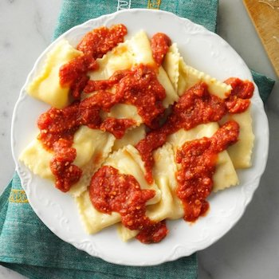
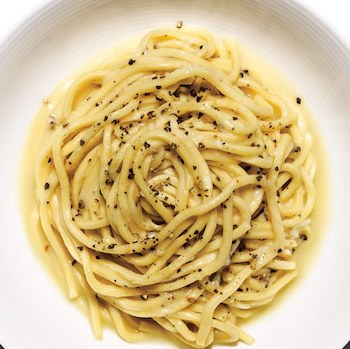
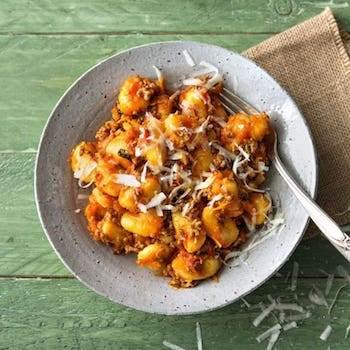
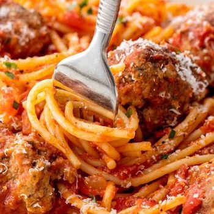
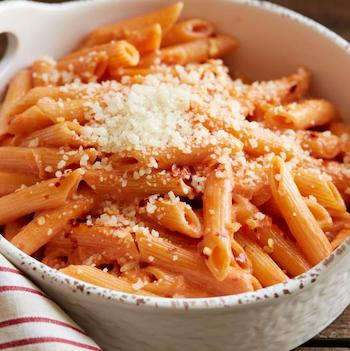

My Favorite Pasta Recipes
Check out snippets from my five favorite pasta recipes below.

Homemade Ravioli Recipe
Recipe and Image From Taste of Home
- 1. Place 6 cups flour in a large bowl. Make a well in the center. Beat the eggs, water and oil; pour into well. Stir together, forming a ball. Turn onto a floured surface; knead until smooth and elastic, about 8-10 minutes, adding remaining flour if necessary to keep dough from sticking. Cover and let rest for 30 minutes.
- 2. Meanwhile, in a Dutch oven, combine the sauce ingredients. Bring to a boil. Reduce heat; cover and simmer for 1 hour, stirring occasionally.
- Click here for more!

Cacio E Pepe Recipe
Recipe and Image From Bon Appétit
- 1. Bring 3 quarts water to a boil in a 5-qt. pot. Season with salt; add pasta and cook, stirring occasionally, until about 2 minutes before tender. Drain, reserving 3/4 cup pasta cooking water.
- 2. Meanwhile, melt 2 Tbsp. butter in a large heavy skillet over medium heat. Add pepper and cook, swirling pan, until toasted, about 1 minute.
- 3. Add 1/2 cup reserved pasta water to skillet and bring to a simmer. Add pasta and remaining butter.
- Click here for more!

Gnocchi Bolognese Recipe
Recipe and Image From Hello Fresh
- 1. Wash and dry all produce. Bring a large pot of salted water to a boil. Peel and grate the carrot with a box grater.
- 2. Heat a drizzle of olive oil in a large pan over high heat. Add the ground beef. Cook, breaking up the meat into pieces, until browned and cooked through, about 3-5 minutes. Season with salt and pepper. Remove from the pan, but don’t drain the oil.
- 3. Heat a drizzle of olive oil in a large pan over high heat. Add the ground beef.
- Click here for more!

Spaghetti and Meatballs Recipe
Recipe and Image From Delish
- 1. In a large pot of boiling salted water, cook spaghetti according to package instructions. Drain.
- 2. In a large bowl, combine beef with bread crumbs, parsley, Parmesan, egg, garlic, 1 teaspoon salt, and red pepper flakes. Mix until just combined then form into 16 balls.
- 3. In a large pot over medium heat, heat oil. Add meatballs and cook, turning occasionally, until browned on all sides, about 10 minutes. Transfer meatballs to a plate.
- Click here for more!

Penne Alla Vodka Recipe
Recipe and Image From Food Network
- 1. Cook the pasta according to the package directions.
- 2. Saute the garlic and onions in 2 tablespoons butter and the olive oil in a saucepan over medium heat until soft. Pour in the vodka, being careful if your stove has an open flame (remove the pan from the heat before adding).
- 3. Cook and reduce for 2 to 3 minutes, then pour in the tomato puree. Stir the mixture until it's thoroughly combined, then reduce the heat to low.
- Click here for more!